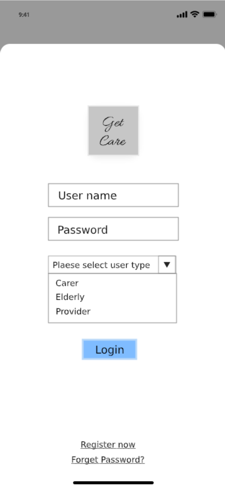
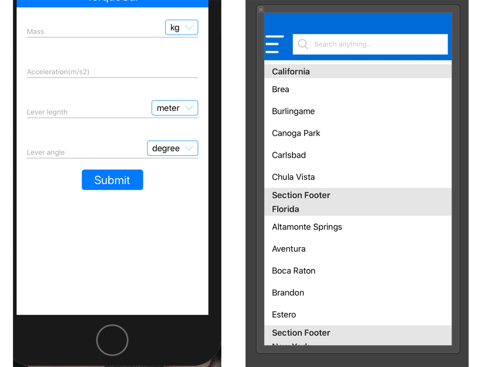
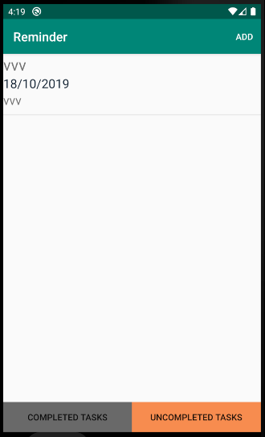

|
Zhiyu Cao (曹芷毓) |
Profile
- I am a second-year PHD student in university of canberrra.
- If you have any projects related to networking, please contact me. I'm always willing to get involved in.
Interest
I used WordPress to develop a website for my final year project of undergraduate and it was very successful. I think I would really like to join your team and get a part time job..Education
- 2015.12-2018.12 Undergraduate in Univeristy of South Australia , UNISA.
- Coursework in UNISA: Bachelor Transcript
- 2018.12-2020.2 Postgraduate in College of Engineering and Computer Science , ANU.
- Coursework in ANU: Structured Programming (Java), Logic(Inference of Computer Internal Algorithms), Software Construction(using Java in Android Studio developing), Art and new media(JavaScript), Relational Database(SQL), Computing Project(Final year Project) Data Mining, Computer Network, Discrete Mathematical Models, Data wrangling, Python
- 2020.2-current PHD in Univeristy of Canberra.
Projects
- DR STEVE BURROUGHS FOUNDATION WEBSITE
- Get Care 
- Calculator & Fish Track app (on ios) 
- Rail Road ink
- Android Reminder App 
Some projects are quite naive, many projects are job or assignment requirements, and here are just some running effects (code not included).
Some projects are only in code form, and there is no interface that actually runs out. So I don’t show it here. I hope you can have a better understanding of me
Please click the image for detailed information


Skills
- Programing Language Proficient in Java,Android,JavaScript.
- Tools Visual studio | Intellij | Eclipse | Xcode | Android studio | QT creator | SQL developer | Rattle | GIT | WordPress
- Language English (Fluent), Madarian(Native).
Familiar with SQL, Python, R, CSS, Html, Swift, C++, C#.